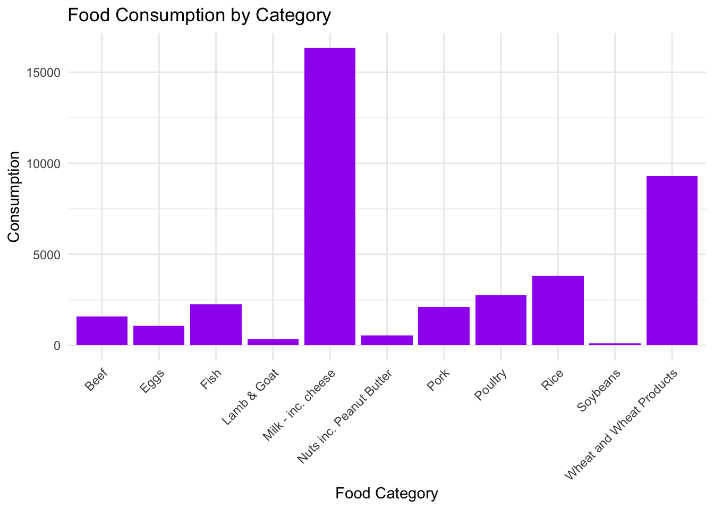
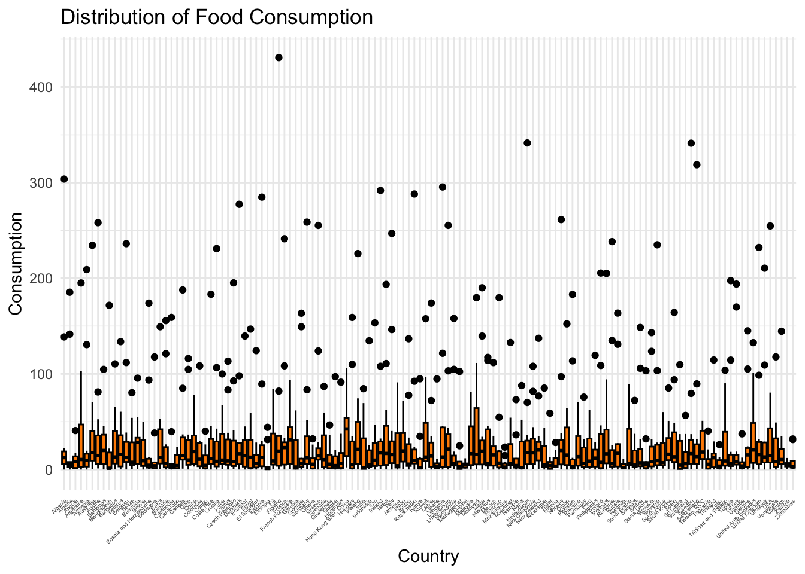
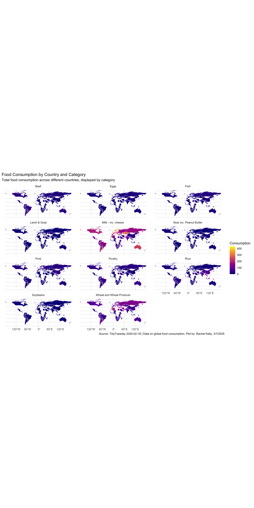
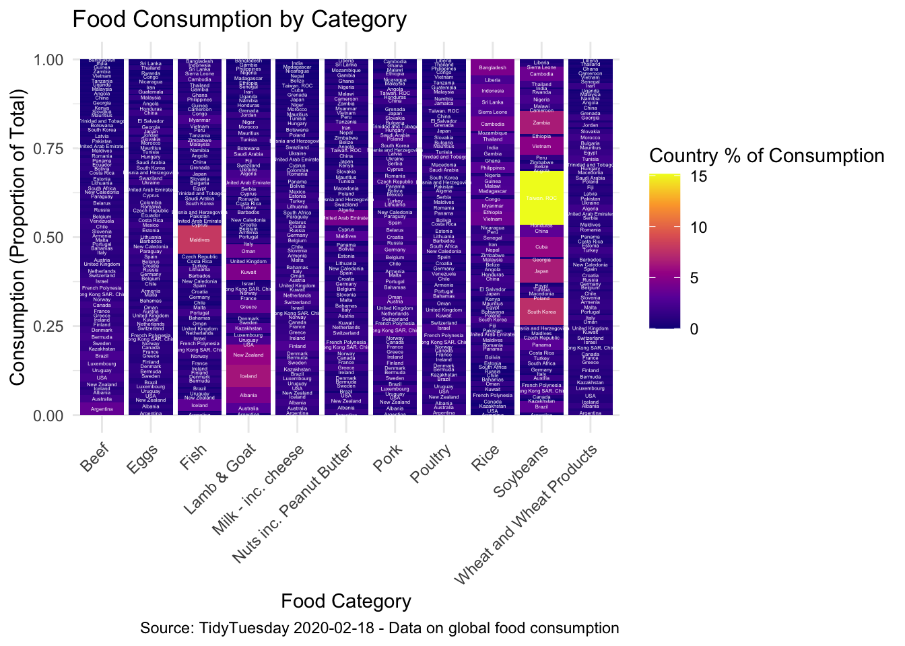

6 Exam 1
Grand Research Question: What does the consumption of each food category in each country look like?
6.1 Understanding the Data
# A tibble: 6 × 4
country food_category consumption co2_emmission
<chr> <chr> <dbl> <dbl>
1 Argentina Pork 10.5 37.2
2 Argentina Poultry 38.7 41.5
3 Argentina Beef 55.5 1712
4 Argentina Lamb & Goat 1.56 54.6
5 Argentina Fish 4.36 6.96
6 Argentina Eggs 11.4 10.5 [1] 1430 4spc_tbl_ [1,430 × 4] (S3: spec_tbl_df/tbl_df/tbl/data.frame)
$ country : chr [1:1430] "Argentina" "Argentina" "Argentina" "Argentina" ...
$ food_category: chr [1:1430] "Pork" "Poultry" "Beef" "Lamb & Goat" ...
$ consumption : num [1:1430] 10.51 38.66 55.48 1.56 4.36 ...
$ co2_emmission: num [1:1430] 37.2 41.53 1712 54.63 6.96 ...
- attr(*, "spec")=
.. cols(
.. country = col_character(),
.. food_category = col_character(),
.. consumption = col_double(),
.. co2_emmission = col_double()
.. )
- attr(*, "problems")=<externalptr> [1] 1430# A tibble: 6 × 4
country food_category consumption co2_emmission
<chr> <chr> <dbl> <dbl>
1 Bangladesh Eggs 2.08 1.91
2 Bangladesh Milk - inc. cheese 21.9 31.2
3 Bangladesh Wheat and Wheat Products 17.5 3.33
4 Bangladesh Rice 172. 220.
5 Bangladesh Soybeans 0.61 0.27
6 Bangladesh Nuts inc. Peanut Butter 0.72 1.27# A tibble: 22 × 4
country food_category consumption co2_emmission
<chr> <chr> <dbl> <dbl>
1 Argentina Pork 10.5 37.2
2 Argentina Poultry 38.7 41.5
3 Argentina Beef 55.5 1712
4 Argentina Lamb & Goat 1.56 54.6
5 Argentina Fish 4.36 6.96
6 Argentina Eggs 11.4 10.5
7 Argentina Milk - inc. cheese 195. 278.
8 Argentina Wheat and Wheat Products 103. 19.7
9 Argentina Rice 8.77 11.2
10 Argentina Soybeans 0 0
# ℹ 12 more rowsConclusions: There are 11 food categories and 130 countries.
The GRQ has 3 variables involved: consumption (density plot or histogram), food category (bar graph), and country (bar graph or map).
6.2 Visualize the data - Understanding consumption

Code
#Boxplot showing relationship between overall food consumption and country
ggplot(fc, aes(x = country, y = consumption)) +
geom_boxplot(fill = "darkorange", color = "black") +
theme_minimal() +
labs(title = "Distribution of Food Consumption",
x = "Country",
y = "Consumption") +
theme(axis.text.x = element_text(angle = 45, hjust = 1, size = 3.5))
Not a great visualization of the data since there are so many countries. Really hard to draw conclusions.
6.3 Spatial Visualization of Grand Research Question

This map shows the food consumption of each food category in each country with data given. Wheat and Milk including cheese have the highest global consumptions. It would be nice if the visualization wasn’t so small. I will try non-spatial visualization below to see if I can better visualize the data.
6.4 Bar Graph Visualization of Grand Research Question
Code
#Stacked Bar Graph
#| fig-height: 35
#| fig-width: 15
#| message: false
#| warning: false
#| echo: false
#| results: 'hide'
# Compute total consumption of each food category for each country
fc_stacked <- fc |>
group_by(food_category) |>
mutate(category_total = sum(consumption, na.rm = TRUE)) |>
ungroup() |>
mutate(percent = (consumption / category_total) * 100)
# Plot stacked bar graph
ggplot(fc_stacked, aes(x = food_category, y = consumption, fill = percent)) +
geom_bar(stat = "identity", position = "fill") +
geom_text(aes(label = country),
position = position_fill(vjust = 0.5),
size = 1, color = "white", check_overlap = TRUE) +
scale_fill_viridis_c(option = "plasma", name = "Country % of Consumption") +
theme_minimal() +
labs(title = "Food Consumption by Category",
x = "Food Category",
y = "Consumption (Proportion of Total)",
caption = "Source: TidyTuesday 2020-02-18 - Data on global food consumption",
alt = "A stacked bar chart showing food consumption by category. Each bar is divided into country proportions, with labels inside indicating the country names.") +
theme(axis.text.x = element_text(angle = 45, hjust = 1))
Code
#It's relatively hard to see country names, so this is also not an ideal visualization. It is nice to see the countries that are responsible for a lot of consumption like Taiwan for soybeans, up there with Japan, Cuba, South Korea and Zambia. I do think I like this better than the spatial visualization, although if I could zoom in on either of them, that would be helpful. 6.5 Additional Questions
- How does CO2 emissions impact data visualizations by country?
- What is the link between CO2 emissions and consumption per country?
- Which countries have the highest CO2 emissions and do they also have the highest consumption rate?
- Which countries have the highest rice consumption?